📚 Ressources

Truffes
Respawn : 12 minutes
Mousserons
Respawn : 2min30
Pleurotes
Respawn : 2min30
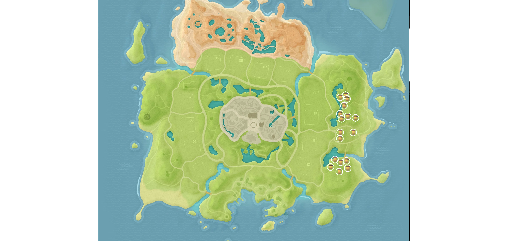
Cèpes de Bordeaux
Respawn : 2min30
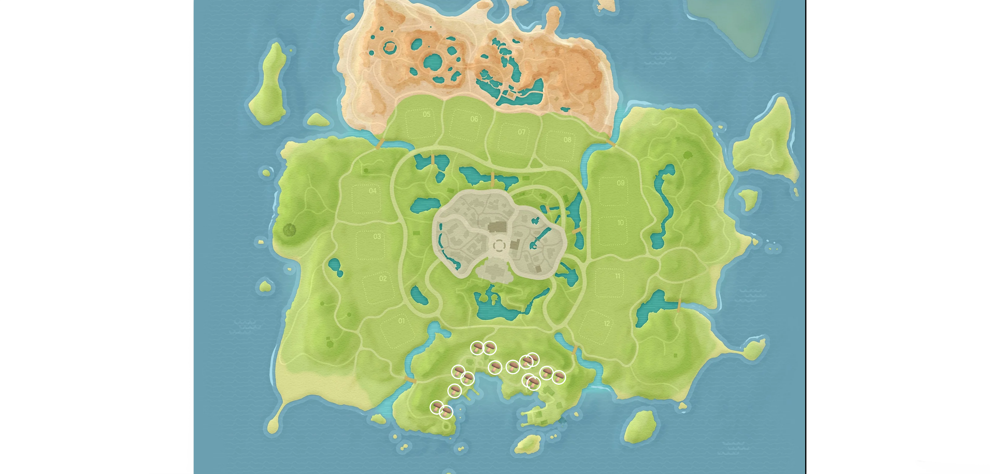
Shiitake
Respawn : 2min30
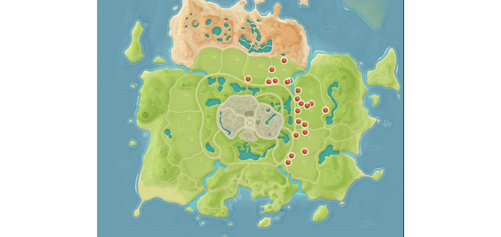
Pommes
Respawn : 2min
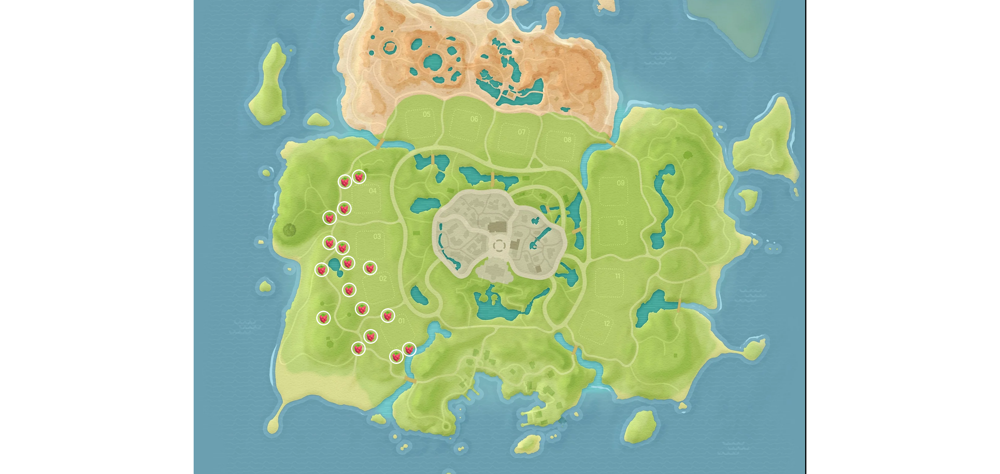
Framboises
Respawn : 2min
Myrtilles
Respawn : 2min
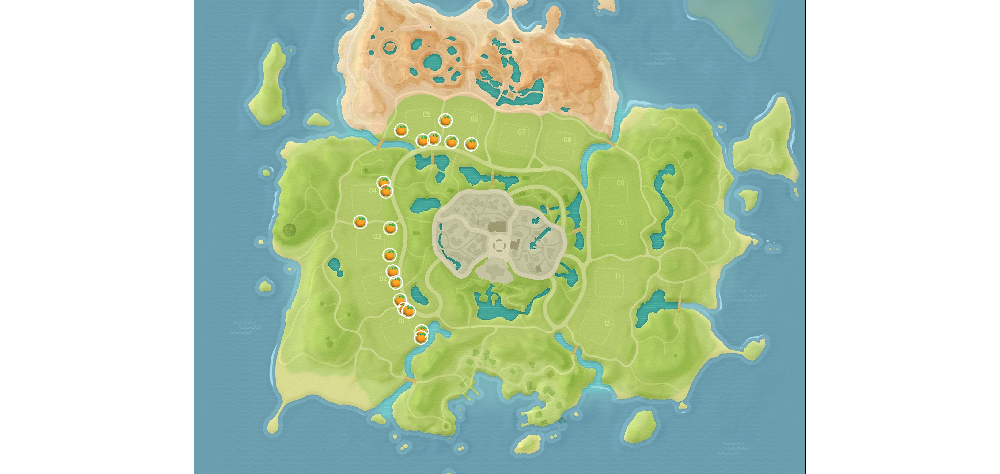
Oranges
Respawn : 2min
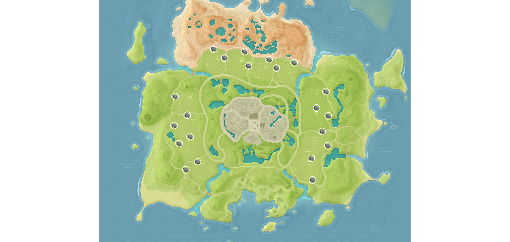
Pierres
Respawn : 5min
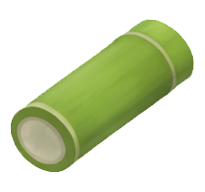
Bambou
Respawn : 2min
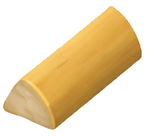
Bois
Respawn : 2min
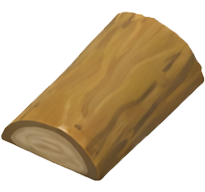
Bois de qualité
Respawn : 2min
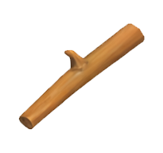
Branches
Respawn : 2min
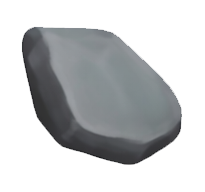
Minerais
Respawn : 5min
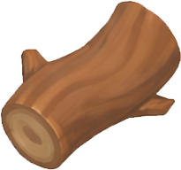
Bois de chêne glissant
1x par jour
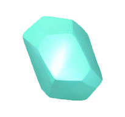
Fluorite sans défaut
1x par jour
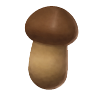
Matsutake
2min